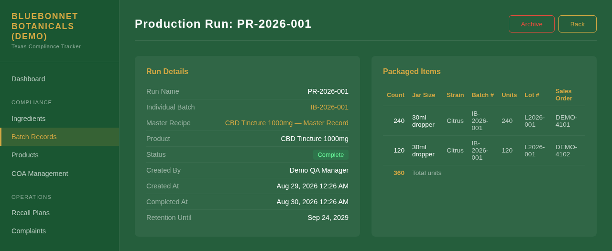
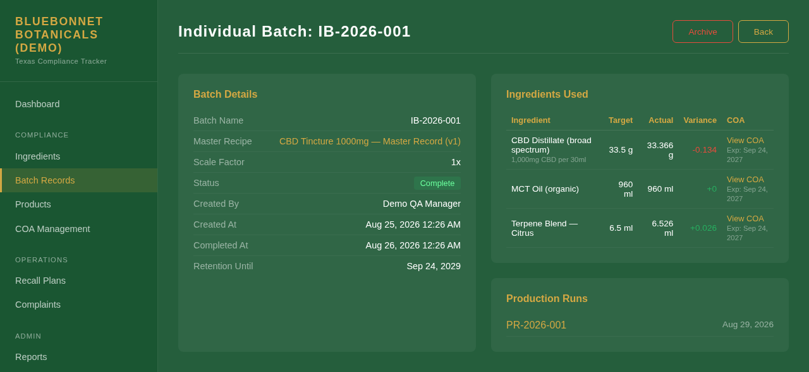
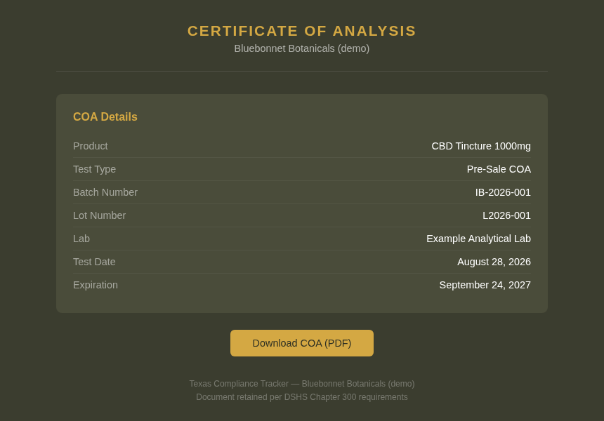
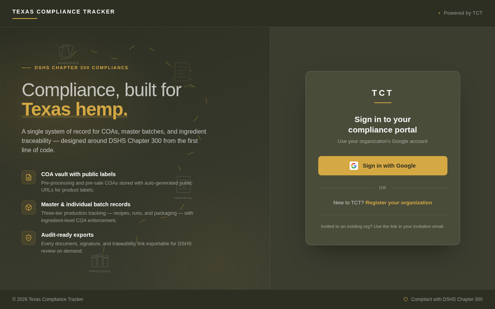

The problem
At a small hemp manufacturer, the batch trail lives in folders, email attachments, and somebody's memory. Each record exists somewhere. Nothing connects them. When the state asks about one lot, someone spends an afternoon rebuilding the chain by hand and hopes no lab report went missing along the way.
What I built
One web portal. Lab reports attach to ingredients. Ingredients go into master recipes. Each recipe spawns batches with real weights, and each batch is packed into runs with lot numbers and sales orders. The finished batch's lab report gets a public page for the label. Sign-in is by Google account, and each company gets its own workspace with roles.
What changed
"Show me this lot" means opening the run, clicking the batch, and one more click reaches any ingredient's lab report. The portal won't start a batch while an ingredient has no lab report on file, so the gap gets caught on the production floor instead of in an audit. The four core modules went from whiteboard photos to a running portal in two days.
The regulator's question, answered in clicks
Start where an inspector starts: the lot number on a box. It leads to the production run that packed it: how many units, what jar, which lot, against which sales order. The batch that filled those jars is a link on that page.

The batch page is where the trail lives. It names the recipe it was made from, shows the target and the actual weight of every ingredient with the difference, and pins the lab report for each ingredient as it stood when the batch started. Every production run packed from this batch is listed underneath.

The trail, end to end
Five kinds of record, each mapped to a section of the rule, each pointing at the one before it. Lab reports come in from two directions: one round of testing on raw materials, one on the finished product before it can be sold.
Left to right is how a product gets made. Right to left, the dashed line, is how an inspector reads it back. The batch in the middle is the hub: it knows its recipe, its ingredients' lab reports, and every run it became.
Rules the software enforces, so nobody has to remember them
- No lab report, no batch. Starting a batch checks every ingredient in the recipe against the registry. If one has no lab report on file, the portal names it and stops.
- History doesn't move. A batch copies its target weights from the recipe the moment it starts. Editing the recipe later changes future batches, never the record of a past one.
- Packaging comes from finished work. A production run can only be opened against a batch that has been marked complete.
- Signatures stay on paper. The rule asks for two handwritten signatures on each master recipe, so the portal prints the record with two signature lines and takes the signed scan back. It doesn't pretend a click is a signature.
- Nothing quietly disappears. Every record carries a three-year retention date, finished records can be archived out of the way instead of deleted, and more than thirty kinds of event (sign-ins, uploads, downloads, edits, invites) are written to an audit log that only ever grows.
What the customer sees
The rule's labeling section requires a link on the package to the product's lab report. Mark a pre-sale report public and it gets its own page at a random, unguessable address, ready to print as a link or a QR code. No login, no account, and nothing else from the portal visible.

Built for more than one company
The portal was built for Elevated Trading and designed from the start to be offered to its partners and customers too. A new company registers itself through Google sign-in and becomes its own workspace, and its admin invites people as admin, manager, or viewer. Every page checks that the record belongs to the signed-in user's company. Each workspace sets its own colors and logo, and the text flips between light and dark automatically so a brand color never makes a page unreadable.

Where it stands
Live at its own address. The four core modules (lab reports, products, production records, ingredients) and the settings behind them are done, and complaint intake followed a week later. Recall plans and the audit reports an inspector would download are the next two phases on the plan, and neither is built yet.
The screenshots on this page come from a copy of the portal running on my own machine, filled with a made-up company, made-up suppliers and labs, and made-up orders. No customer's records appear here.
Stack
Laravel instead of something newer because the hosting the company already paid for runs PHP. The right stack is the one that fits the server you have.
Built in conversation
Same method as everything on this site. The hard part wasn't the code. It was reading Chapter 300 closely enough to know that a "master production record" and a "batch production record" are two different things, that one is a recipe and the other is Tuesday's run, and that the software should keep them apart. That reading, the data model it produced, and the portal itself came out of dialogue with Claude, starting from photos of a whiteboard.